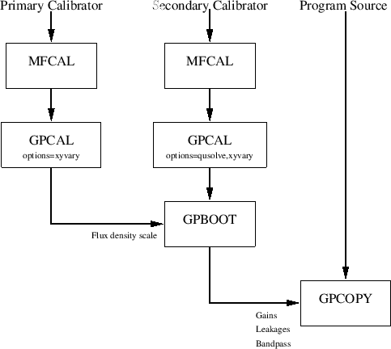
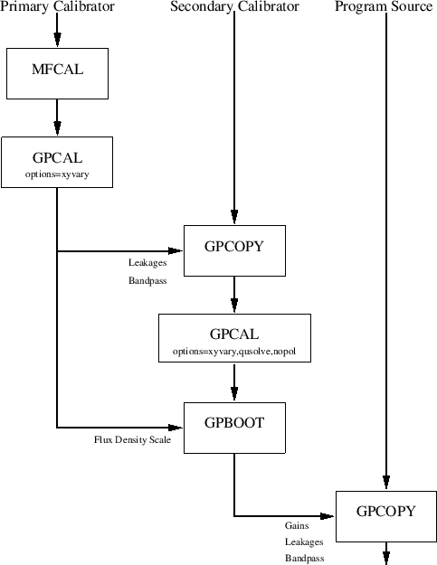

Next: The Interpolation Process Up: Calibration Strategies Previous: Preparing your Data
The second avenue is to rely on the observation of the primary calibrator, 1934-638, to determine instrumental polarisation and bandpass function. This is possible as 1934-638 is strong, and its polarisation is known (it is less than 0.2% polarised). This approach is shown in Figure 12.3. Note that this approach relies on knowing the polarisation of 1934-638. This approach cannot be used if an alternative primary calibrator is used.
|  |
|  |
As well as determining a bandpass function, mfcal determines antenna gains. These gains are based upon the assumption that the source is unpolarised (which happens to be true for 1934-638) and that the instrumental polarisation is zero (which is not true). While these assumptions do not affect the quality of the bandpass, and provided you have measured all four polarisation correlations, it is best to follow the run of mfcal with task gpcal to correctly determine instrumental polarisation. The task mfcal is described more completely in Section 11.4
If your data are to be combined (or compared) with pre-August 1994 ATCA data, you will probably also use the oldflux option (see Section 12.6).
| MFCAL | |
| vis=1934-638.4800 | Specify primary calibrator. |
| flux | Leave unset. |
| line | Select good channels. |
| refant=3 | Specify the reference antenna. |
| interval=5 | Solution interval for gain solutions (minutes). |
| options | Normally leave blank, but |
| options=oldflux | set to oldflux to get the pre-August 1994 scale. |
options=xyvary.
If your data are to be combined (or compared) with pre-August 1994 ATCA data,
you will probably also use the oldflux
option (see Section 12.6).
Typical parameters for calibrating 1934-638 are thus
| GPCAL | |
| vis=1934-638.4800 | Specify primary calibrator |
| flux | Leave unset |
| refant=3 | Specify the reference antenna |
| interval=5 | Solution interval for gain solutions (minutes) |
| options=xyvary | Solve for XY phase as a function of time, or |
| options=xyvary,oldflux | add oldflux to get pre-August 1994 flux scale. |
Task gpcal will report the instrumental polarisation parameters (leakages) - two complex numbers per feed. Typically these are 1 to 2%, although they can be 4% under bad conditions. Typically these are quite constant with time, with similar values resulting from observations several months apart. However they are modestly frequency dependent.
Tasks appropriate to examine the effectiveness of the calibration are uvplt (to generate plots of the calibrated data - remember that many Miriad tasks apply any available calibration by default) and gpplt (to generate plots of the calibration tables - both antenna gains and bandpass functions). A particularly useful plot is the ``scatter diagram'' plot generated by uvplt with the following inputs
| UVPLT | |
| vis=1934-638.4800 | Specify primary calibrator |
| stokes=i,q,u,v | Plot all Stokes parameters. |
| axis=real,imag | Plot real vs imaginary |
| options=equal,nobase | Equal X and Y axes. Plot all baselines |
| together. | |
| device=/xs | Normal PGPLOT device - Xwindows for example |
This scatter diagram should show four concentrations of points - one for I at the flux density of the calibrator, and the others for Q, U and V probably near zero. If there are outliers, you probably need to do some more flagging. If you see arcs, the phase calibration is probably bad - you might try decreasing the solution interval.
Good parallactic angle coverage enables you to disentangle the instrumental and secondary polarisations from each other. ``Good coverage'' generally means more than a few cuts. For sources near declination of -30 degrees, the parallactic angle remains constant through much of the observation, except near transit where it goes through a rapid change, whereas for sources near the poles, parallactic angle changes linearly with time. You can plot your parallactic angle coverage using the task varplt. More strictly, it plots the angle between the sky and the feed (i.e. parallactic angle plus 45 degrees for the ATCA).
| VARPLT | |
| vis=0823-500.4800 | Specify secondary calibrator |
| xaxis | Time is the default x axis |
| yaxis=chi | Plot parallactic angle + 45 degrees |
| device=/xs | PGPLOT device - xwindows in this case |
| MFCAL | |
| vis=0823-500.4800 | Specify secondary calibrator |
| flux | Leave unset |
| refant=3 | Specify the reference antenna |
| interval=5 | Solution interval for gain solutions (minutes) |
Skip the remainder of this step if you have only measured XX and YY correlations, as the gains determined by mfcal are as good as you can do. Otherwise we now come to solving for instrumental polarisation and the polarisation of the secondary itself. Given good parallactic angle coverage, these can be disentangled. For a given correlation, the instrumental polarisation terms stay constant with time, whereas the polarisation due to the source vary as sinusoids of the parallactic angle. Inputs to gpcal are similar to the case of the primary, with the very significant exception that we must turn on the switch to solve for the secondary's polarisation. The appropriate options to do this are options=qusolve,xyvary. As with mfcal, the flux density of the secondary will generally not be known, so gpcal determines a flux density so that the rms antenna gains are 1. Again the interval parameter should be set to the calibrator scan length if the phase stability is good. If this is not so, then it should be set to a smaller value (1 to 0.1 minutes) with the caveats as noted in the Section 11.4 above. If you do set it so a small value, there is an additional step (and decision) to be performed before you can interpolate the gain solutions onto your program source - see Section 12.4.
Typical inputs for this case are
| GPCAL | |
| vis=0823-500.4800 | Specify secondary calibrator |
| flux | Leave unset |
| refant=3 | Specify the reference antenna |
| interval=5 | Solution interval for gain solutions (minutes) |
| options=qusolve,xyvary | Solve for calibrator Q and U, and |
| allow XY phase to vary with time. | |
xyref and polref. This will solve
for an XY phase offset on the reference antenna, as well as an
instrumental polarisation characteristic that cannot be determined from
a weakly polarised source.
The task to copy the instrumental polarisation and bandpass function is gpcopy. The inputs are very simple for this situation - you give it the names of the input and output datasets. For example
| GPCOPY | |
| vis=1934-638.4800 | Specify 1934-638 dataset. |
| out=0823-500.4800 | Specify the output secondary calibrator |
| options | Leave unset. |
| mode | Leave unset. |
This will also copy the antenna gains determined for 1934-638 - this is unimportant as we will now overwrite them by rerunning gpcal. We want to solve for antenna gains and the XY phases as a function of time. Additionally, if we have measured all four polarisation correlations, we want to solve for the polarisation of the secondary. We do not have enough data to solve for instrumental and secondary polarisation simultaneously, so we turn off the solver for instrumental polarisation. The relevant options are thus options=xyvary,qusolve,nopol if all four polarisation correlations were measured, and options=xyvary,nopol if only XX and YY were measured. Again the solution interval should be either the scan length (for observations with good phase stability) or set to a small value (if phase stability is poor). Typical inputs are
| GPCAL | |
| vis=0823-500.4800 | Specify secondary calibrator |
| flux | Leave unset |
| refant=3 | Specify the reference antenna |
| interval=5 | Solution interval for gain solutions (minutes) |
| options=xyvary,qusolve,nopol | If you measured XX,YY,XY and YX, or |
| options=xyvary,nopol | if you have only XX and YY correlations. |
The first, and simplest, check of the calibration process is to use uvflux to check how well the calibrated data fits a point source. Task uvflux assumes the data represents a point source, and determines the source flux density and the rms scatter about this point. It also prints out the theoretical scatter based on thermal noise arguments. It will do this for any of the Stokes parameters. Typical inputs are
| UVFLUX | |
| vis=0823-500.4800 | Specify secondary calibrator |
| stokes=i,q,u,v | Check all four Stokes parameters. |
| options | Leave unset (apply calibration). |
The first numeric column given for each Stokes parameter is the theoretical
scatter. Note if you are using the 33 channel / 128 MHz system, and if
no channel averaging has been performed, or the birdie options
has not been used with atlod, then the
theoretical scatter printed by uvflux
is a factor of  higher than the true theoretical value. This is as, for this correlator
configuration (and not for others), individual channels are not independent -
they overlap by a factor of exactly 2 (in noise bandwidth). Task uvflux
fails to take account of this. The second and third numeric columns
are the mean visibility
amplitude and phase. The phase should be near 0 for I, but could be either
0 or 180 degrees for Q and U (assuming there is signal in these!).
V should be noise. The fourth
column gives the actual scatter. This should be close to the theoretical
value. Do not be concerned if it is a factor of 2 or so bigger. If it is
more than a factor of a few greater than the theoretical, you probably
still have bad data or a bad gain solution.
higher than the true theoretical value. This is as, for this correlator
configuration (and not for others), individual channels are not independent -
they overlap by a factor of exactly 2 (in noise bandwidth). Task uvflux
fails to take account of this. The second and third numeric columns
are the mean visibility
amplitude and phase. The phase should be near 0 for I, but could be either
0 or 180 degrees for Q and U (assuming there is signal in these!).
V should be noise. The fourth
column gives the actual scatter. This should be close to the theoretical
value. Do not be concerned if it is a factor of 2 or so bigger. If it is
more than a factor of a few greater than the theoretical, you probably
still have bad data or a bad gain solution.
Using uvplt to plot the calibrated data is also recommended. As with the primary, a scatter diagram plot is quite useful and quick.
| UVPLT | |
| vis=0823-500.4800 | Specify secondary calibrator. |
| stokes=i,q,u,v | Plot all Stokes parameters. |
| axis=real,imag | Plot real vs imaginary |
| options=equal,nobase | Equal X and Y axes. Plot all baselines |
| together. | |
| device=/xs | Normal PGPLOT device - Xwindows for example |
Outliers in the scatter diagram probably indicate bad data - you might want to go back and flag some more, and redo some calibration steps. Note, however, that the ultimate objective of the calibration process is to get good calibration solutions - you are not attempting to produce perfect primary or secondary calibrator data. If you do not believe that outliers affect the calibration solutions unduly, ignore them.
Another check is to plot the gain solutions and inspect them for consistency - use gpplt for this (see Section 11.7). Typical inputs for plotting the solved-for XY phases are given below. These XY phases are the difference between the actual XY phases and the XY phase correction applied by atlod. These should be constant (within the noise) and no more than a few degrees.
| GPPLT | |
| vis=0823.uv | Specify secondary calibrator |
| device=/xs | PGPLOT device - X windows in this case |
| yaxis=phase | Plot the phase of the ratio |
| options=xygains | of the X and Y gains |
In addition to plotting these solved-for XY phases, it is probably worth while plotting antenna and bandpass gains and phases. If you see glitches in the solutions, check the data again. This might be due to bad data or interference. You might do some more flagging, and redo some of the calibration again.
A final check is to compare the instrumental polarisation solution (the leakage parameters). You can compare these with another independently derived set of these solutions. These solutions are moderately time independent (they are moderately consistent over months), although there is significant frequency variation. The independent set of solutions may have come from the primary (e.g. if you determined instrumental polarisation for the primary and secondary independently - which was recommended if you had sufficient parallactic angle coverage), or from a previous configuration, or possibly other secondary calibrators from the same observing run. The task to compare the different solutions is gpnorm. Apart from just taking some sort of difference between two sets of parameters, it adjusts certain parameters to minimise the difference. The parameters that it adjusts are the absolute feed orientation and ellipticity - two quantities that are not solved for in the preceding calibration process (unless you had a strongly polarised calibrator, and used options=polref in gpcal). Task gpnorm can also deduce an error in the absolute XY phase between the two observations (an error in the absolute XY phase leaves a signature in the instrumental polarisation parameters).
Task gpnorm reports three numbers - an XY phase offset, the offset in absolute orientation and ellipticity, and a residual rms error. As the preceding calibration process should have corrected for the XY phase offset, this should be no more than a few degrees. The offset in absolute orientation and ellipticity should be no more than 2-3%. The rms residual error should be no more than 0.005. You would expect the agreement to degrade with time difference in the observations used to derive the parameters. Agreement should be very good for parameters derived from observations on the same day, whereas agreement should be less good for observations several months apart.
Having solved for an offset in absolute XY phase, orientation and ellipticity, gpnorm can ``correct'' the calibration tables for these. This is generally not advisable.
Typical inputs to gpnorm are
| GPNORM | |
| vis=0823-500.4800 | The leakages to check. |
| cal=1934-638.4800 | The `good' set of leakages. |
| options | Leave unset. |
In principle, you should use observations of the secondary and primary calibrators that were taken at the same time and elevation. For obvious reasons this is not possible. However, you can use the select keyword to select data from the secondary when it was as close as possible to the primary's elevation when it was observed.
Task gpboot can optionally correct the XY phases of the secondary, assuming that the XY phases of the primary are correct, and that the XY phases are constant. Given XY phase strategy that you should have already followed, this is not recommended.
| GPBOOT | |
| vis=0823-500.4800 | Specify secondary calibrator. |
| cal=1934-638.4800 | Specify the primary calibrator. |
| select | Use this to select the time range of |
| the secondary. | |
| options=noxy | Do not make XY phase corrections |
| GPCOPY | |
| vis=0823-500.4800 | Specify secondary calibrator |
| out=vela.4800 | Specify the program source dataset |
| options | Leave unset |
| mode | Leave unset |
Miriad manager